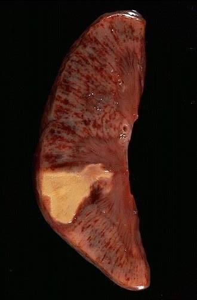
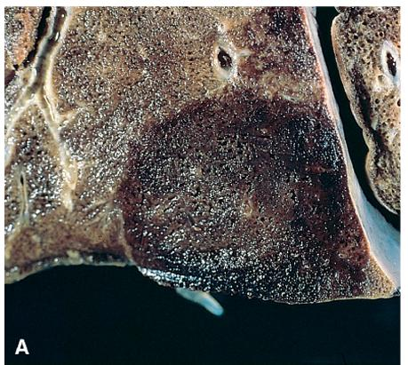
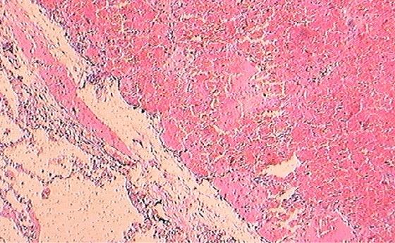
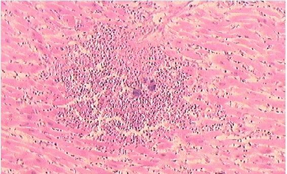

This is where the story ends: tissue that has been cut off from its blood supply and died. Nearly every clinically important consequence of the previous four Parts — myocardial infarction, stroke, bowel infarction, gangrene — arrives here. The two questions worth asking of any infarct are: why did it happen at all (many occlusions cause none), and why is it that colour.اینجا پایان داستان است: بافتی که خونرسانیاش قطع شده و مرده است. تقریباً هر پیامد بالینی مهم چهار بخش پیشین — انفارکتوس میوکارد، سکتهٔ مغزی، انفارکتوس روده، گانگرن — به اینجا میرسد. دو پرسشی که دربارهٔ هر انفارکتوس ارزش پرسیدن دارند: اصلاً چرا رخ داد (بسیاری از انسدادها انفارکتوس ایجاد نمیکنند)، و چرا این رنگ را دارد.
By the end of this Part you should be able toدر پایان این بخش باید بتوانید
List the four factors that determine whether a vascular occlusion produces an infarct.چهار عاملی را که تعیین میکنند آیا انسداد عروقی به انفارکتوس میانجامد یا نه، نام ببرید.
Explain mechanistically why some infarcts are white and others red.بهطور مکانیستیک توضیح دهید چرا برخی انفارکتها سفیدند و برخی قرمز.
Describe the gross and microscopic evolution of an infarct over hours, days and weeks.تحول ماکروسکوپی و میکروسکوپی انفارکتوس را طی ساعتها، روزها و هفتهها شرح دهید.
Differentiate dry, wet and gas gangrene.گانگرن خشک، مرطوب و گازی را تفکیک کنید.
Trace a complete thrombosis → embolism → infarction sequence in a single patient.یک توالی کامل ترومبوز ← آمبولی ← انفارکتوس را در یک بیمار دنبال کنید.
5.1Definition and Causesتعریف و علل
Definitionتعریف
An infarct is an area of ischaemic necrosis of a tissue or organ caused by occlusion of either its arterial supply or its venous drainage. The process of its formation is infarction.انفارکت ناحیهای از نکروز ایسکمیک بافت یا عضو است که در اثر انسداد خونرسانی شریانی یا تخلیهٔ وریدی آن ایجاد میشود. فرایند شکلگیری آن، انفارکتوس نام دارد.
Note the "or". Most infarcts are arterial, but venous occlusion can also cause one — see §5.3, where it is the key to understanding the red infarct.به واژهٔ «یا» توجه کنید. بیشتر انفارکتها شریانیاند، اما انسداد وریدی هم میتواند انفارکتوس بسازد — بخش ۵.۳ را ببینید، جایی که این کلید فهم انفارکت قرمز است.
Causes, in order of frequencyعلل، بهترتیب فراوانی
Thrombotic arterial occlusion — usually on a ruptured atherosclerotic plaque. The commonest cause overall; this is myocardial infarction and most strokes.انسداد ترومبوتیک شریانی — معمولاً روی پلاک آترواسکلروتیک پارهشده. شایعترین علت بهطور کلی؛ انفارکتوس میوکارد و بیشتر سکتههای مغزی از همین دستهاند.
Arterial embolism — from cardiac mural thrombus, valvular vegetation, aortic plaque or a paradoxical venous embolus.آمبولی شریانی — از ترومبوس جداری قلب، وژتاسیون دریچهای، پلاک آئورت یا آمبولی پارادوکسیکال وریدی.
Extrinsic compression of a vessel — tumour, volvulus, intussusception, incarcerated hernia, or a testicular/ovarian torsion. Note that twisting compresses the thin-walled veins first, which is why these lesions produce haemorrhagic infarcts.فشار خارجی بر رگ — تومور، ولولوس، انواژیناسیون، فتق گیرافتاده، یا پیچخوردگی بیضه/تخمدان. توجه کنید که پیچخوردگی ابتدا وریدهای نازکدیواره را میفشارد و به همین دلیل این ضایعات انفارکت هموراژیک ایجاد میکنند.
Vessel wall expansion or dissection — atheromatous plaque haemorrhage, aortic dissection occluding a branch ostium.گسترش دیوارهٔ رگ یا دیسکسیون — خونریزی درون پلاک آترومی، دیسکسیون آئورت که دهانهٔ شاخهای را مسدود کند.
Venous thrombosis — where there is no alternative outflow, e.g. ovarian, testicular or mesenteric vein thrombosis, or superior sagittal sinus thrombosis.ترومبوز وریدی — جایی که مسیر خروجی جایگزینی وجود ندارد، مثل ترومبوز ورید تخمدان، بیضه یا مزانتر، یا ترومبوز سینوس ساژیتال فوقانی.
Vasculitis, sickle cell crisis, and external pressure (a tight cast, prolonged pressure causing a pressure sore).واسکولیت، بحران سلول داسی، و فشار خارجی (گچ تنگ، فشار طولانی که زخم بستر ایجاد میکند).
5.2The Four Determinants of Whether an Infarct Developsچهار عامل تعیینکنندهٔ ایجاد انفارکتوس
Occlusion does not automatically mean infarction. A surgeon can tie off the splenic artery and the spleen may survive on short gastric collaterals; a pulmonary artery branch can be blocked and the lung remains viable. Four variables decide the outcome.انسداد بهطور خودکار بهمعنای انفارکتوس نیست. جراح میتواند شریان طحالی را ببندد و طحال با عروق جانبی گاستریک کوتاه زنده بماند؛ شاخهای از شریان ریوی میتواند مسدود شود و ریه سالم بماند. چهار متغیر پیامد را تعیین میکنند.
Table 5.1 Will an occlusion cause an infarct?جدول ۵.۱ — آیا این انسداد انفارکتوس ایجاد میکند؟
Factorعامل
How it worksنحوهٔ عملکرد
Illustrationمثال
① Nature of the vascular supply① ماهیت خونرسانی
The single most important factor. An alternative route means the tissue survives. Two protective arrangements exist: effective anastomoses, and a genuine dual blood supply.مهمترین عامل واحد. وجود مسیر جایگزین یعنی بقای بافت. دو آرایش محافظ وجود دارد: آناستوموزهای مؤثر، و خونرسانی دوگانهٔ واقعی.
② Rate of development of the occlusion② سرعت ایجاد انسداد
Slowly developing occlusions permit collateral vessels to enlarge and new ones to grow. A sudden occlusion gives no time for this adaptation.انسدادهای آهسته به عروق جانبی فرصت بزرگشدن و رشد عروق جدید میدهند. انسداد ناگهانی زمانی برای این سازگاری باقی نمیگذارد.
A coronary artery narrowed over years by atherosclerosis may be totally occluded without infarction, because collaterals have developed. The same artery occluded suddenly by plaque rupture causes a full-thickness infarct.شریان کرونری که طی سالها با آترواسکلروز تنگ شده ممکن است بدون انفارکتوس کاملاً مسدود شود، چون عروق جانبی ایجاد شدهاند. همان شریان اگر ناگهان با پارگی پلاک مسدود شود، انفارکت تمامضخامت ایجاد میکند.
③ Vulnerability of the tissue to hypoxia③ آسیبپذیری بافت به هیپوکسی
Cells differ enormously in how long they survive without oxygen, largely according to their dependence on oxidative metabolism and their capacity for anaerobic glycolysis.سلولها از نظر مدت بقا بدون اکسیژن بسیار متفاوتاند، عمدتاً بر اساس وابستگی به متابولیسم اکسیداتیو و توان گلیکولیز بیهوازی.
Neurons: 3–4 minutes. Cardiac myocytes: 20–30 minutes. Renal tubular epithelium: ~30 minutes. Skeletal muscle: several hours. Fibroblasts: many hours. Hence the order of death within any ischaemic field.نورونها: ۳ تا ۴ دقیقه. سلولهای عضلهٔ قلب: ۲۰ تا ۳۰ دقیقه. اپیتلیوم توبول کلیه: حدود ۳۰ دقیقه. عضلهٔ اسکلتی: چند ساعت. فیبروبلاستها: ساعتهای زیاد. از اینرو ترتیب مرگ در هر ناحیهٔ ایسکمیک.
④ Oxygen-carrying capacity of the blood④ ظرفیت حمل اکسیژن خون
Even a partially obstructed vessel may deliver enough oxygen if the blood is fully saturated — but not if it is anaemic or desaturated.حتی رگی که تا حدی مسدود باشد میتواند اکسیژن کافی برساند، بهشرط آنکه خون کاملاً اشباع باشد — اما نه اگر بیمار کمخون یا اشباعنشده باشد.
An anaemic or cyanotic patient tolerates arterial insufficiency far less well than a normal person. The same degree of coronary stenosis that causes only stable angina in a healthy adult can cause infarction in a patient with severe anaemia, carbon monoxide poisoning or congestive heart failure.بیمار کمخون یا سیانوتیک نارسایی شریانی را بسیار بدتر از فرد سالم تحمل میکند. همان میزان تنگی کرونری که در بزرگسال سالم فقط آنژین پایدار ایجاد میکند، میتواند در بیمار مبتلا به کمخونی شدید، مسمومیت با مونوکسید کربن یا نارسایی احتقانی قلب انفارکتوس بسازد.
Mnemonic — organs with a dual blood supplyیادیار — اعضای دارای خونرسانی دوگانه
"LLH" — Lung, Liver, Hand (and forearm). Lung = pulmonary + bronchial arteries. Liver = hepatic artery + portal vein. Hand/forearm = radial + ulnar arteries via the palmar arches. These are the tissues that resist infarction and, when they do infarct, do so red."LLH" — Lung, Liver, Hand (ریه، کبد، دست و ساعد). ریه = شریان ریوی + برونشیال. کبد = شریان کبدی + ورید پورت. دست/ساعد = شریان رادیال + اولنار از طریق قوسهای کف دستی. این بافتها در برابر انفارکتوس مقاوماند و اگر دچار شوند، انفارکت قرمز میسازند.
5.3White versus Red Infarctانفارکت سفید در برابر قرمز
White (pale, anaemic) infarctانفارکت سفید (رنگپریده، آنمیک)

Fig 5.1White infarct of the spleen. A sharply demarcated, wedge-shaped, pale yellow-white area with its base on the capsule and its apex pointing towards the occluded arterial branch — the geometry of an end-arterial territory.انفارکت سفید طحال. ناحیهای با مرز مشخص، گوهایشکل و زرد–سفید کمرنگ که قاعدهاش روی کپسول و رأسش به سمت شاخهٔ شریانی مسدود است — هندسهٔ یک قلمرو شریانی انتهایی.Fig 5.2 A second splenic infarct. The pale wedge contrasts sharply with the dark red viable parenchyma around it — the red cells within the necrotic zone have been lysed and cleared.انفارکت طحالی دوم. گوهٔ رنگپریده تضاد شدیدی با پارانشیم قرمز تیرهٔ زنده اطرافش دارد — گلبولهای قرمز درون ناحیهٔ نکروتیک لیز و پاکسازی شدهاند.
Mechanism — why some infarcts turn paleمکانیسم — چرا برخی انفارکتها رنگپریده میشوند
An end artery supplying a solid, compact organ is occluded. The organ has little or no effective collateral circulation.Kidney, spleen, heart and retina are supplied by end arteries with minimal anastomoses, so occlusion removes the only supply to that territory.یک شریان انتهایی که عضوی توپر و متراکم را تغذیه میکند مسدود میشود. آن عضو گردش خون جانبی مؤثری ندارد یا بسیار کم دارد.کلیه، طحال، قلب و شبکیه با شریانهای انتهایی و آناستوموز حداقلی خونرسانی میشوند، پس انسداد، تنها منبع تغذیهٔ آن قلمرو را حذف میکند.
Inflow stops completely. Only the small amount of blood already inside the territory remains.There is no second route to push more blood in — this is the decisive difference from a dual-supply organ.ورود خون کاملاً قطع میشود و تنها مقدار اندکی خون که از پیش در آن قلمرو بوده باقی میماند.مسیر دومی برای وارد کردن خون بیشتر وجود ندارد — این تفاوت تعیینکننده با عضوی با خونرسانی دوگانه است.
The tissue undergoes coagulative necrosis: cells die but their structural outlines persist for days.Ischaemia denatures both the structural proteins and the lysosomal hydrolases that would otherwise digest the cell, so the architecture is preserved as a "ghost" outline. The brain is the sole exception — see the trap box below.بافت دچار نکروز انعقادی میشود: سلولها میمیرند اما خطوط ساختاریشان روزها باقی میماند.ایسکمی هم پروتئینهای ساختاری و هم هیدرولازهای لیزوزومی را که در غیر این صورت سلول را هضم میکردند دناتوره میسازد، پس معماری بهصورت طرحی «شبحمانند» حفظ میشود. مغز تنها استثناست — کادر دام امتحانی زیر را ببینید.
The red cells trapped in the territory are lysed, and their haemoglobin is degraded and removed by macrophages.Dead red cells have no way to maintain their membranes; haemolysis follows, and phagocytes clear the pigment. Nothing new arrives to replace it, because inflow is blocked.گلبولهای قرمز بهدامافتاده در آن قلمرو لیز میشوند و هموگلوبین آنها تجزیه شده و توسط ماکروفاژها برداشته میشود.گلبولهای قرمز مرده نمیتوانند غشای خود را حفظ کنند؛ همولیز رخ میدهد و فاگوسیتها رنگدانه را پاک میکنند. چیز تازهای هم جایگزین نمیشود، چون ورودی مسدود است.
The necrotic zone therefore progressively decolorises, becoming pale yellow-white and sharply demarcated from the surrounding congested viable tissue.A tissue is red because of haemoglobin. Remove the haemoglobin and prevent replacement, and what is left is the pale colour of the protein matrix itself.بنابراین ناحیهٔ نکروتیک بهتدریج رنگ خود را از دست میدهد، زرد–سفید کمرنگ شده و مرز مشخصی با بافت زندهٔ محتقن اطراف پیدا میکند.بافت بهدلیل هموگلوبین قرمز است. هموگلوبین را حذف کنید و از جایگزینی آن جلوگیری نمایید، آنچه میماند رنگ کمرنگ خودِ ماتریکس پروتئینی است.
A pale, firm, wedge-shaped infarct with the apex at the occluded vessel and the base at the organ surface, often with a thin hyperaemic rim of inflamed viable tissue at its edge. Typical organs: kidney, spleen, heart.انفارکتی رنگپریده، سفت و گوهایشکل با رأس در محل رگ مسدود و قاعده در سطح عضو، اغلب با حاشیهٔ پرخون نازکی از بافت زندهٔ ملتهب در لبه. اعضای شاخص: کلیه، طحال، قلب.
Red (haemorrhagic) infarctانفارکت قرمز (هموراژیک)

Fig 5.3Red infarct of the lung. A firm, dark red-brown area with its base on the pleural surface. The infarct is haemorrhagic throughout because bronchial arterial flow continued to fill a territory the pulmonary artery could no longer oxygenate.انفارکت قرمز ریه. ناحیهای سفت و قرمز–قهوهای تیره که قاعدهاش روی سطح پلور است. انفارکت در تمام ضخامت خونریزیدهنده است، چون جریان شریان برونشیال همچنان قلمرویی را پر از خون میکرده که شریان ریوی دیگر نمیتوانست اکسیژنرسانی کند.Fig 5.4 An older haemorrhagic infarct in a fixed lung specimen. As the extravasated red cells are broken down, the lesion turns from red to brown — the same haemoglobin → haemosiderin conversion described in §2.4.انفارکت هموراژیک قدیمیتر در نمونهٔ فیکسشدهٔ ریه. با تجزیهٔ گلبولهای قرمز خارجشده، ضایعه از قرمز به قهوهای تغییر رنگ میدهد — همان تبدیل هموگلوبین به هموسیدرین که در بخش ۲.۴ توضیح داده شد.Fig 5.5 Haemorrhagic infarction of small bowel following volvulus. The affected loop is dark purple-black and grossly distinct from the viable pink bowel beside it.انفارکتوس هموراژیک رودهٔ باریک پس از ولولوس. قوس درگیر بنفش–سیاه تیره است و بهوضوح از رودهٔ صورتی و زندهٔ کنار خود متمایز میگردد.
Mechanism — the three routes to a red infarctمکانیسم — سه مسیر رسیدن به انفارکت قرمز
Route A — venous occlusion. Outflow is blocked while arterial inflow continues. Blood is pumped in but cannot leave, so the tissue engorges. Rising intravascular pressure eventually stops arterial inflow too, and the tissue dies — but it dies full of blood.This is the central insight. A venous infarct is haemorrhagic by definition, because the blood was driven in under arterial pressure before the tissue died, and had no way out. Classic examples: testicular and ovarian torsion, mesenteric vein thrombosis, volvulus, intussusception, strangulated hernia.مسیر الف — انسداد وریدی. خروجی مسدود است در حالی که ورودی شریانی ادامه دارد. خون پمپ میشود اما نمیتواند خارج گردد، پس بافت پر از خون میشود. فشار بالارونده سرانجام ورودی شریانی را هم متوقف میکند و بافت میمیرد — اما پر از خون میمیرد.این بینش مرکزی است. انفارکت وریدی طبق تعریف هموراژیک است، چون خون پیش از مرگ بافت تحت فشار شریانی به داخل رانده شده و راه خروجی نداشته است. مثالهای کلاسیک: پیچخوردگی بیضه و تخمدان، ترومبوز ورید مزانتر، ولولوس، انواژیناسیون، فتق خفهشده.
Route B — a loose, spongy tissue. Lung and bowel have abundant interstitial space into which blood can pool.A compact organ like the kidney has no room for blood to accumulate; a spongy organ like the lung does. The same volume of haemorrhage disappears in one and is conspicuous in the other.مسیر ب — بافت شل و اسفنجی. ریه و روده فضای بینابینی فراوانی دارند که خون میتواند در آن جمع شود.عضو متراکمی مثل کلیه جایی برای تجمع خون ندارد؛ عضو اسفنجی مثل ریه دارد. حجم یکسانی از خونریزی در یکی ناپیدا میشود و در دیگری چشمگیر.
Route C — dual circulation or collateral reperfusion. After the main artery is occluded, blood still enters the dead zone from the second supply or from an adjacent bed — but not enough to keep it alive.In the lung, the bronchial arteries continue to perfuse a territory whose pulmonary artery is blocked. That flow is sufficient to fill the necrotic zone with blood but not sufficient to oxygenate it, because bronchial arterial flow is only ~1% of cardiac output. Haemorrhage is compounded by ischaemic damage to the capillary walls, which then leak. The same happens after reperfusion — for example thrombolysis or angioplasty restoring flow to an already-necrotic myocardium, which converts a white infarct into a haemorrhagic one.مسیر ج — گردش دوگانه یا خونرسانی مجدد جانبی. پس از انسداد شریان اصلی، خون همچنان از منبع دوم یا از بستر مجاور وارد ناحیهٔ مرده میشود — اما نه بهقدری که آن را زنده نگه دارد.در ریه، شریانهای برونشیال به خونرسانی قلمرویی ادامه میدهند که شریان ریویاش مسدود شده. این جریان برای پر کردن ناحیهٔ نکروتیک از خون کافی است اما برای اکسیژنرسانی نه، چون جریان شریان برونشیال تنها حدود یک درصد برونده قلبی است. خونریزی با آسیب ایسکمیک دیوارهٔ مویرگها که سپس نشت میکنند تشدید میشود. همین اتفاق پس از خونرسانی مجدد میافتد — مثلاً ترومبولیز یا آنژیوپلاستی که جریان را به میوکارد از پیش نکروتیک بازمیگرداند و انفارکت سفید را به هموراژیک تبدیل میکند.
A dark red to purple-black, firm, wedge-shaped infarct, often with an overlying fibrinous exudate on the serosal surface. Typical organs: lung, small intestine, testis, ovary — and any organ after reperfusion. As the extravasated red cells are broken down over days, the lesion becomes brown from haemosiderin.انفارکتی قرمز تیره تا بنفش–سیاه، سفت و گوهایشکل، اغلب با اگزودای فیبرینی روی سطح سروزی. اعضای شاخص: ریه، رودهٔ باریک، بیضه، تخمدان — و هر عضوی پس از خونرسانی مجدد. با تجزیهٔ گلبولهای قرمز خارجشده طی چند روز، ضایعه بهدلیل هموسیدرین قهوهای میشود.
Table 5.2 White versus red infarctجدول ۵.۲ — انفارکت سفید در برابر قرمز
Featureویژگی
White (pale / anaemic) infarctانفارکت سفید (رنگپریده/آنمیک)
Red (haemorrhagic) infarctانفارکت قرمز (هموراژیک)
Vascular eventرویداد عروقی
Arterial occlusionانسداد شریانی
Venous occlusion, or arterial occlusion in a dual-supply or reperfused organانسداد وریدی، یا انسداد شریانی در عضوی با خونرسانی دوگانه یا خونرسانی مجدد
Tissue architectureمعماری بافت
Solid, compact — no room for blood to poolتوپر و متراکم — جایی برای تجمع خون نیست
Pale yellow-white, becoming paler with timeزرد–سفید کمرنگ که با گذشت زمان روشنتر میشود
Dark red to purple-black, becoming brown (haemosiderin)قرمز تیره تا بنفش–سیاه که قهوهای میشود (هموسیدرین)
Demarcationمرزبندی
Sharply demarcatedمرز کاملاً مشخص
Less sharply demarcatedمرز کمتر مشخص
Shapeشکل
Both are wedge-shaped, with the apex at the occluded vessel and the base at the organ surface — the geometry of any arterial territory.هر دو گوهایشکلاند، با رأس در محل رگ مسدود و قاعده در سطح عضو — هندسهٔ هر قلمرو شریانی.
Necrosis typeنوع نکروز
Coagulative in all organs except the brain, where it is liquefactive.در تمام اعضا انعقادی است جز مغز که مایعشونده است.
Exam Trap — the brain is different, twice overدام امتحانی — مغز دو بار استثناست
First, cerebral infarcts undergo liquefactive, not coagulative, necrosis. The reason is mechanistic: the brain has very little supporting collagenous stroma and a very high lipid content, and microglia release abundant hydrolytic enzymes, so the dead tissue digests itself into a fluid-filled cyst rather than retaining its outline. Second, the brain is on the vulnerable list for hypoxia (neurons die in 3–4 minutes) despite having the circle of Willis — because that anastomosis protects only against proximal occlusion, not against occlusion of the small penetrating end arteries beyond it.نخست، انفارکتهای مغزی دچار نکروز مایعشونده میشوند نه انعقادی. دلیل، مکانیستیک است: مغز استرومای کلاژنی حمایتی بسیار کمی و محتوای لیپیدی بسیار بالایی دارد و میکروگلیا آنزیمهای هیدرولیتیک فراوان آزاد میکند، پس بافت مرده خود را هضم کرده و به کیستی پر از مایع تبدیل میشود بهجای آنکه طرح خود را حفظ کند. دوم، مغز با وجود داشتن حلقهٔ ویلیس در فهرست بافتهای آسیبپذیر به هیپوکسی است (نورونها ظرف ۳ تا ۴ دقیقه میمیرند) — چون آن آناستوموز فقط در برابر انسداد پروگزیمال محافظت میکند، نه در برابر انسداد شریانهای نفوذی انتهایی کوچکتر پس از آن.

Fig 5.6 Red infarct of lung, histology. The alveolar spaces on the right are filled with red cells; the necrotic alveolar walls have lost their nuclei but retain their outlines — coagulative necrosis.انفارکت قرمز ریه، هیستولوژی. فضاهای آلوئولی سمت راست پر از گلبول قرمزند؛ دیوارههای نکروتیک آلوئولی هستههای خود را از دست دادهاند اما خطوطشان باقی است — نکروز انعقادی.Fig 5.7 Coagulative necrosis at higher power: cells are anucleate "ghosts" with preserved outlines, and a band of acute inflammatory cells marks the viable margin.نکروز انعقادی در بزرگنمایی بالاتر: سلولها «شبح»های بدون هسته با خطوط حفظشدهاند و نواری از سلولهای التهابی حاد، حاشیهٔ زنده را مشخص میکند.
5.4Morphology and Time Courseمورفولوژی و سیر زمانی
The evolution below uses myocardial infarction as the model, because its timings are the most examined, but the sequence is the same in any organ.سیر زیر، انفارکتوس میوکارد را بهعنوان الگو بهکار میبرد چون زمانبندیهای آن بیش از همه پرسیده میشود، اما همین توالی در هر عضوی صادق است.
Table 5.3 Evolution of an infarctجدول ۵.۳ — تحول انفارکتوس
Timeزمان
Grossماکروسکوپی
Microscopicمیکروسکوپی
Clinical relevanceاهمیت بالینی
0–4 hصفر تا ۴ ساعت
No change visibleهیچ تغییر قابلرؤیتی نیست
None by light microscopy; possible wavy fibres at the borderهیچ تغییری در میکروسکوپ نوری؛ احتمالاً الیاف موجی در حاشیه
Diagnosis is clinical + ECG + troponin, not morphologicalتشخیص بالینی + نوار قلب + تروپونین است، نه مورفولوژیک
4–24 h۴ تا ۲۴ ساعت
Dark mottlingخالخال تیره
Coagulative necrosis begins: hypereosinophilic cytoplasm, pyknosis and karyolysis; early neutrophil marginationنکروز انعقادی آغاز میشود: سیتوپلاسم پُر ائوزینوفیل، پیکنوز و کاریولیز؛ حاشیهنشینی اولیهٔ نوتروفیل
Highest risk of arrhythmia and sudden deathبالاترین خطر آریتمی و مرگ ناگهانی
1–3 days۱ تا ۳ روز
Pale yellow-tan centre with a hyperaemic borderمرکز زرد–نخودی کمرنگ با حاشیهٔ پرخون
Dense neutrophil infiltrate; complete loss of nucleiارتشاح متراکم نوتروفیل؛ از دست رفتن کامل هستهها
Fibrinous pericarditis may appear over a transmural infarctپریکاردیت فیبرینی ممکن است روی انفارکت تمامضخامت ظاهر شود
3–7 days۳ تا ۷ روز
Yellow centre, softening; red-brown marginمرکز زرد و نرمشونده؛ حاشیهٔ قرمز–قهوهای
Neutrophils die; macrophages arrive and begin phagocytosing debrisنوتروفیلها میمیرند؛ ماکروفاژها میرسند و بلع بقایا را آغاز میکنند
Maximum risk of rupture — the wall is at its weakest. Free wall rupture → tamponade; septal rupture → VSD; papillary muscle rupture → acute mitral regurgitationبیشترین خطر پارگی — دیواره ضعیفترین حالت را دارد. پارگی دیوارهٔ آزاد ← تامپوناد؛ پارگی سپتوم ← نقص دیوارهٔ بطنی؛ پارگی عضلهٔ پاپیلاری ← نارسایی حاد میترال
Risk of rupture falls; ventricular aneurysm may begin to formخطر پارگی کم میشود؛ آنوریسم بطنی ممکن است شروع به تشکیل کند
2–8 weeks۲ تا ۸ هفته
Grey-white, firm, contracted scarاسکار خاکستری–سفید، سفت و جمعشده
Dense collagenous scar; no regeneration of myocytesاسکار متراکم کلاژنی؛ بدون بازسازی سلولهای عضلانی
Cardiac muscle is permanent tissue — it cannot regenerate, so function is permanently lost. Scar predisposes to arrhythmia and aneurysmعضلهٔ قلب بافتی دائمی است — بازسازی نمیشود، پس عملکرد برای همیشه از دست میرود. اسکار زمینهساز آریتمی و آنوریسم است
General principles that apply to all infarcts: they are wedge-shaped with the apex at the occluded vessel; the margins become better defined over time; the dominant histological change is coagulative necrosis (except brain); an acute inflammatory response begins within hours and is followed by macrophages and then by organization and fibrous scar; and if the organ's cells are permanent (cardiac myocytes, neurons), the lost function is never recovered.اصول کلی که برای همهٔ انفارکتها صادق است:گوهایشکلاند با رأس در محل رگ مسدود؛ مرزهایشان با گذشت زمان مشخصتر میشود؛ تغییر غالب بافتشناسی نکروز انعقادی است (جز مغز)؛ پاسخ التهابی حاد ظرف چند ساعت آغاز شده و سپس ماکروفاژها و پس از آن سازمانیابی و اسکار فیبروز میآید؛ و اگر سلولهای آن عضو دائمی باشند (سلول عضلهٔ قلب، نورون)، عملکرد ازدسترفته هرگز بازنمیگردد.
5.5Septic Infarctانفارکت سپتیک

Fig 5.8 Septic infarct. Necrotic tissue is densely infiltrated by neutrophils and colonised by bacteria — the infarct has become an abscess.انفارکت سپتیک. بافت نکروتیک بهشدت توسط نوتروفیلها ارتشاح یافته و باکتریها در آن مستقر شدهاند — انفارکت به آبسه تبدیل شده است.
When an infarct is caused by an infected (septic) embolus — classically from infective endocarditis — or when bacteria seed a bland infarct, the lesion does not heal by scarring. Instead it is converted into an abscess.وقتی انفارکت توسط آمبولوس عفونی (سپتیک) ایجاد شود — بهطور کلاسیک از اندوکاردیت عفونی — یا وقتی باکتریها یک انفارکت ساده را آلوده کنند، ضایعه با اسکار ترمیم نمیشود، بلکه به آبسه تبدیل میگردد.
Why: necrotic tissue is an ideal culture medium — it is protein-rich, has no blood supply to deliver leukocytes, antibodies or antibiotics, and no mechanism to clear organisms. Bacteria therefore multiply unchecked, drawing in a massive neutrophil response that liquefies the tissue and walls it off with a pyogenic membrane. The inflammatory response is far more intense than in a bland infarct, and healing requires drainage rather than simple organization.چرا: بافت نکروتیک محیط کشت ایدهآلی است — سرشار از پروتئین، بدون خونرسانی برای رساندن لکوسیت، آنتیبادی یا آنتیبیوتیک، و بدون سازوکاری برای پاکسازی میکروب. بنابراین باکتریها بدون مهار تکثیر میشوند و پاسخ عظیم نوتروفیلی را فرا میخوانند که بافت را مایع کرده و با غشای چرکی محصور مینماید. پاسخ التهابی بسیار شدیدتر از انفارکت ساده است و بهبود به تخلیه نیاز دارد نه صرفاً سازمانیابی.
Additional consequence: organisms in the embolus may destroy the arterial wall at the lodging site, producing a mycotic aneurysm that can rupture catastrophically — a classic cause of fatal intracerebral haemorrhage in endocarditis.پیامد دیگر: میکروبهای درون آمبولوس ممکن است دیوارهٔ شریان را در محل گیرکردن تخریب کرده و آنوریسم میکوتیک بسازند که میتواند بهطور فاجعهباری پاره شود — علتی کلاسیک برای خونریزی کشندهٔ داخل مغزی در اندوکاردیت.
5.6Gangreneگانگرن
Gangrene is not a distinct type of necrosis but a clinical term for necrosis of a substantial mass of tissue, usually a limb or a segment of bowel, with superimposed changes.گانگرن نوع مجزایی از نکروز نیست بلکه اصطلاحی بالینی برای نکروز تودهٔ قابلتوجهی از بافت — معمولاً یک اندام یا قطعهای از روده — همراه با تغییرات افزوده است.
Table 5.4 Dry, wet and gas gangreneجدول ۵.۴ — گانگرن خشک، مرطوب و گازی
Typeنوع
Mechanismمکانیسم
Appearanceظاهر
Typical settingزمینهٔ معمول
Outcome / managementپیامد / اقدام
Dry gangreneگانگرن خشک
Arterial occlusion with intact venous drainage. Coagulative necrosis; the tissue desiccates because fluid drains away and none arrives.انسداد شریانی با تخلیهٔ وریدی سالم. نکروز انعقادی؛ بافت خشک میشود چون مایع تخلیه شده و مایع تازهای نمیرسد.
Dry, shrunken, black, mummified, with a sharp line of demarcation from viable tissueخشک، جمعشده، سیاه و مومیایی، با خط مرزی مشخص از بافت زنده
Toes and feet in diabetes mellitus and atherosclerotic peripheral vascular disease; Buerger diseaseانگشتان و پا در دیابت و بیماری عروق محیطی آترواسکلروتیک؛ بیماری بورگر
Slow progression; infection is limited because the tissue is dry. May auto-amputate. Elective amputation at the demarcation line.پیشرفت آهسته؛ عفونت محدود است چون بافت خشک است. ممکن است خودبهخود قطع شود. قطع انتخابی در خط مرزی.
Wet gangreneگانگرن مرطوب
Venous (or combined) obstruction with superimposed bacterial infection. Liquefactive change superimposed on coagulative necrosis.انسداد وریدی (یا ترکیبی) همراه با عفونت باکتریایی افزوده. تغییر مایعشونده روی نکروز انعقادی.
Swollen, soft, wet, black-green, foul-smelling; no clear demarcationمتورم، نرم، مرطوب، سیاه–سبز و بدبو؛ بدون مرزبندی مشخص
Rapid spread, systemic toxaemia and septic shock. Surgical emergency — resection and antibiotics.گسترش سریع، توکسمی سیستمیک و شوک سپتیک. اورژانس جراحی — برداشتن و آنتیبیوتیک.
Gas gangreneگانگرن گازی
Infection of necrotic muscle by Clostridium perfringens and related anaerobes. Bacterial α-toxin (a lecithinase) lyses membranes; fermentation of tissue carbohydrate produces gas.عفونت عضلهٔ نکروتیک با کلستریدیوم پرفرینجنس و بیهوازیهای مشابه. توکسین آلفای باکتری (یک لسیتیناز) غشاها را لیز میکند؛ تخمیر کربوهیدرات بافت گاز تولید مینماید.
Swollen, discoloured muscle with crepitus (palpable gas) and gas on radiograph; thin, foul, brownish dischargeعضلهٔ متورم و بدرنگ با کرپیتوس (گاز قابللمس) و گاز در رادیوگرافی؛ ترشح رقیق، بدبو و قهوهای
Deep contaminated wounds — war injuries, crush injuries, soil-contaminated trauma, septic abortionزخمهای عمیق آلوده — جراحات جنگی، آسیب لهشدگی، ترومای آلوده به خاک، سقط سپتیک
Life-threatening and rapidly progressive. Urgent radical debridement, penicillin plus clindamycin, hyperbaric oxygen.تهدیدکنندهٔ حیات و بهسرعت پیشرونده. دبریدمان وسیع فوری، پنیسیلین بهعلاوهٔ کلیندامایسین، اکسیژن هیپرباریک.
Mnemonicیادیار
Dry = Drains (venous outflow open). Wet = Waterlogged (venous outflow blocked) + Wicked bugs. The presence or absence of venous drainage is the whole distinction.Dry = Drains (خروج وریدی باز است). Wet = Waterlogged (خروج وریدی مسدود) + میکروب. کل تمایز، در وجود یا نبودِ تخلیهٔ وریدی است.
5.7Fate of an Infarct, and the Complete Chainسرنوشت انفارکتوس و زنجیرهٔ کامل
Fateسرنوشت
Small infarct — softens, is digested by macrophages and completely absorbed; may leave no trace.انفارکت کوچک — نرم شده، توسط ماکروفاژها هضم و کاملاً جذب میشود؛ ممکن است هیچ ردی باقی نگذارد.
Large infarct — undergoes organization: granulation tissue replaces necrotic tissue and matures into a contracted fibrous scar. The organ surface becomes depressed over the scar.انفارکت بزرگ — دچار سازمانیابی میشود: بافت گرانولاسیون جایگزین بافت نکروتیک شده و به اسکار فیبروز جمعشده تبدیل میگردد. سطح عضو روی اسکار فرو میرود.
Septic infarct — becomes an abscess, requiring drainage.انفارکت سپتیک — به آبسه تبدیل میشود و نیاز به تخلیه دارد.
Infarction of brain, myocardium or lung — may cause sudden death, from arrhythmia, herniation or acute right heart failure respectively.انفارکتوس مغز، میوکارد یا ریه — میتواند مرگ ناگهانی ایجاد کند، بهترتیب از آریتمی، فتق مغزی یا نارسایی حاد قلب راست.
Brain infarct specifically — liquefies and leaves a fluid-filled cystic cavity bounded by reactive gliosis, not a collagenous scar.بهطور خاص انفارکت مغزی — مایع شده و حفرهٔ کیستیک پر از مایع باقی میگذارد که با گلیوز واکنشی محصور شده، نه با اسکار کلاژنی.
The complete chain — one patient, five sectionsزنجیرهٔ کامل — یک بیمار، پنج بخش
Worked exampleمثال کامل
A 68-year-old woman undergoes total hip replacement. She is immobile for four days post-operatively.زنی ۶۸ ساله تحت تعویض کامل مفصل ران قرار میگیرد و چهار روز پس از عمل بیحرکت است.
Thrombosis (Part 3). Immobility → stasis in the calf veins; surgery → massive tissue factor release and an acute-phase rise in fibrinogen → hypercoagulability; the operation itself injures pelvic vein endothelium. All three arms of Virchow's triad are satisfied simultaneously, and a red (stasis) thrombus forms in the femoral vein, growing antegradely with a poorly anchored tail.ترومبوز (بخش ۳). بیحرکتی ← رکود در وریدهای ساق؛ جراحی ← آزادسازی گستردهٔ فاکتور بافتی و افزایش فاز حاد فیبرینوژن ← حالت پرانعقادی؛ خود عمل هم اندوتلیوم وریدهای لگنی را آسیب میزند. هر سه شاخهٔ سهگانهٔ ویرشو همزمان برآورده میشوند و ترومبوس قرمز (رکودی) در ورید فمورال تشکیل شده و همجهت با جریان رشد میکند، با دمی که ضعیف لنگر انداخته است.
Congestion and edema (Part 1). The occluded femoral vein raises capillary hydrostatic pressure upstream. Her leg becomes swollen, cyanotic, cool and painful — passive congestion plus pitting edema.احتقان و ادم (بخش ۱). ورید فمورال مسدود، فشار هیدروستاتیک مویرگی بالادست را بالا میبرد. ساق او متورم، سیانوتیک، سرد و دردناک میشود — احتقان غیرفعال بهعلاوهٔ ادم گودافتادنی.
Embolism (Part 4). On day 6 she sits up. The tail detaches, travels via the iliac vein, IVC and right heart, and lodges in a segmental branch of the right pulmonary artery — a venous thromboembolism to the lung.آمبولی (بخش ۴). روز ششم مینشیند. دم ترومبوس جدا میشود، از ورید ایلیاک، ورید اجوف تحتانی و قلب راست عبور کرده و در شاخهای سگمنتال از شریان ریوی راست گیر میکند — یک ترومبوآمبولی وریدی به ریه.
Infarction (Part 5). She has long-standing left heart failure, so her bronchial circulation is already compromised by chronic passive pulmonary congestion (Part 1 again). The dual supply is therefore inadequate, and a red (haemorrhagic) wedge infarct forms — spongy tissue, dual supply, incomplete reperfusion.انفارکتوس (بخش ۵). او نارسایی دیرپای قلب چپ دارد، پس گردش خون برونشیال او از پیش بهدلیل احتقان مزمن غیرفعال ریه (باز هم بخش ۱) مختل است. بنابراین خونرسانی دوگانه ناکافی بوده و انفارکت گوهای قرمز (هموراژیک) تشکیل میشود — بافت اسفنجی، خونرسانی دوگانه، خونرسانی مجدد ناقص.
Hemorrhage (Part 2). The infarcted lung bleeds into the alveoli, and she coughs up blood — haemoptysis. Fibrinous exudate over the infarcted segment irritates the pleura, producing pleuritic chest pain and an audible rub.خونریزی (بخش ۲). ریهٔ دچار انفارکتوس به داخل آلوئولها خونریزی میکند و بیمار خون سرفه میکند — هموپتزی. اگزودای فیبرینی روی سگمان انفارکته پلور را تحریک کرده و درد پلورتیک قفسهٔ سینه و صدای مالش قابلشنیدن ایجاد مینماید.
Summary — Infarction in three sentencesخلاصه — انفارکتوس در سه جمله
Infarcts are areas of ischaemic, usually coagulative, necrosis caused by occlusion of arterial supply or, less commonly, venous drainage.انفارکتها نواحی نکروز ایسکمیک و معمولاً انعقادی هستند که از انسداد خونرسانی شریانی یا — کمشایعتر — تخلیهٔ وریدی ناشی میشوند.
They are most commonly caused by occlusive arterial thrombi or by embolisation of arterial or venous thrombi.شایعترین علت آنها ترومبوسهای انسدادی شریانی یا آمبولی ترومبوسهای شریانی یا وریدی است.
Infarcts caused by venous occlusion, or occurring in loose tissues with a dual blood supply, are typically haemorrhagic (red); those caused by arterial occlusion in compact end-arterial tissues are pale (white).انفارکتهای ناشی از انسداد وریدی، یا آنهایی که در بافتهای شل با خونرسانی دوگانه رخ میدهند، معمولاً هموراژیک (قرمز) هستند؛ آنهایی که از انسداد شریانی در بافتهای متراکم با شریان انتهایی ناشی میشوند، رنگپریده (سفید) میباشند.